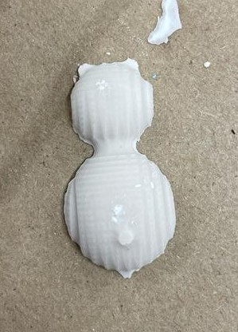
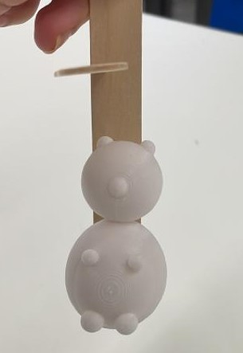

WEEK 8: CNC MILLING, MOLDING AND CASTING
<br>
<b>A week of failures ☹</b>
This week I wanted to experiment with cnc milling on the Shop Bot, Cnc milling on the SRM 20 and casting using different materials. In hindsight this was a little overly ambitious especially given that I encountered many problems and failures along the way.
<u> Training on shop bot </u>
Kassia helped train me on the Shop bot. She showed me how to nail down a sheet, draw something in aspire, send it to the machine and then calibrate the machine to the correct x,y and z axis. I found that this was all relatively straightforward as I was only performing a profile cut on one layer. However, I ran into problems later when I tried to do something more complicated with both profile and pocket cuts and multiple layers (but more on that later).
Some important takeaways:
- Make sure the thickness of the job is equal to the thickness of the wood you are using
- Always make sure nothing is blocking the right side of the milling machine
- Use the paper test to tell what z is appropriate: i.e a paper should be able to move in between the endmill and piece of wood
Here is the result of my training üòä (an asymmetric panda face):
<div class = "center">
<img src="../08/face.jpeg"
width ="400" height="500"/>
</div>
<u> SRM 20 Milling</u>
The SRM milling software made a lot more sense to me at first. The only inputs I was concerned with changing was the sizing to ensure the depth of the cut was not larger than the depth of the drill bit, and the endmill size to make sure the endmill was small enough to capture the detail I needed. Before starting with this however I had to update my Fusion 360 drawing from last week. Last week I didn’t fully understand how milling would be incorporated into the molding and casting and as a result I designed the negative sides of my panda on fusion 360 (i.e essentially the mold). I realized after lecture this week that this makes it so that you are very limited in what material you can use to plaster. For example, by using the wax block to make my negatives I am limited by the material I can use to cast my positive (i.e. the panda shape) – I can’t, for example, cast with Bismouth as it would melt the wax. I decided therefore to change my fusion 360 drawings so that I would include the positive sides of the panda with walls attached, to mold with silicone afterwards.
Here are the updated fusion 360 files:
<iframe src="https://college418.autodesk360.com/shares/public/SH9285eQTcf875d3c539124364191059b3d8?mode=embed" width="640" height="480" allowfullscreen="true" webkitallowfullscreen="true" mozallowfullscreen="true" frameborder="0"></iframe>
Once I got to the milling stage I experience problems with the machine. Firstly, I don’t think the double sided tape method was sufficient for holding down bigger wax blocks as the weight kept causing it to shift and the mill would fail. After finding smaller blocks to use (thanks to Nathan + team for recycling those), this was not an issue anymore but my endmill still kept plunging and getting stuck. I double checked the depth of my with a TA and they said it was not a problem so I am still slightly confused as to why it was happening. I tried cutting using the 2.5D function but this took way too long and did not provide sufficient detail as shown below:
<div class = "center">
<img src="../08/2.5mill.jpeg"
width ="400" height="500"/>
</div>
All I know is that when I scaled down my design significantly it worked! Maybe the depth wasn’t technically larger than that of the endmill but it was still too close for comfort. Finally I stupidly added holes to my design after the first successful cut so that I could align the two negative sides after creating the mold with a stick. I realized that this “hole” went beyond my depth restriction so I just removed them all together. In hindsight I should have created little divots on one side and circular protrusions on the other so the two could fit together like a puzzle piece. At this point however I had taken up too much time on the SRM machine so I decided to just use the successful mills I had gotten, show below:
<div class = "center">
<img src="../08/mill.png"
width ="400" height="500"/>
</div>
Here is a summary of my lessons learnt
Ways that milling machine can fail
- Wax not secured tightly enough
- Depth of cut deeper than mill bit (find correct name)
- Mill not secured tightly enough
- Incorrect mill size used
<u> Creating silicone mix </u>
Luckily this part was pretty straightforward and the silicone only took a few hours to set! The one thing I noticed was my mixing of half to half ratio of the two parts was a little off, since the sides came out as slightly different colours. Both seemed to hold together nicely though, suggesting there is room for error with the silicone mixing. Here are the results:
<div class = "center">
<img src="../08/mold.jpeg"
width ="400" height="500"/>
</div>
<b> Casting with plaster </b>
<u> 2D casting: </u>
After reading the instructions on the plaster box I decided to go with a ratio of weight of 70:100 of water to plaster respectively as this was listed under “molding”. The instructions also advised not to hand-mix but I didn’t have a mixing drill available so I had no choice and was slightly worried this would affect the consistency of my plaster. After mixing, leaving it to settle for a minute, pouring it into my mold and returning an hour later I noticed that there was a thin transparent film on the top of my 2D mold, suggesting that I had not mixed it well enough or that I added too much water. The 2D mold came out alright, the plaster seemed a little chalky but that was also to be expected.
<div class = "center">

</div>
<u> 3D casting:</u>
For the next step I decided to secure my two negatives together to try and complete my panda mold. This proved way more difficult than I had anticipated. At first I tried to secure the two together with toothpicks alone. I then realized this was not enough and tried to add tape around the edges as well as two blocks of wood to ensure it wouldn’t move. Regardless of what I tried to add the plaster mix would continuously seep out of the sides of the mold. I am worried that silicone was not the best choice for this purpose since it is too flimsy. At one point I also tried pouring the plaster into both molds separately and then flipping one on top of the other once it had dried a bit. The problem with this method is that it seems to dry from the bottom up (i.e smallest surface area dries first) so this method didn’t work and somehow broke one side of my plaster.
I think another amendment I saw which seemed to work well was adding a 3d printed lip to secure the sides together and prevent the plaster from seeping out of the bottom.
<b> 3D printing </b>
I was still very much determine to get a casted version of my panda so I decided to try a new approach without milling. I 3D printed the positive of my panda and then secured it to a cup so that it was floating just above the bottom. I then filled it with my silicone plaster as done previously. This stage is not complete yet as I am still waiting for everything to dry but I will update this section after hopefully with successful results. The plan is the to cut a narrow opening in the silicone after the mold is finished on the side of the panda and then place the mold back into the cup for the casting section. Hopefully the cup will provide enough rigidity.
<div class = "center">

</div>
<b> Using Shop Bot </b>
Finally, I wanted more practice with the Shop Bot machine so I decided to mill a carving for a late birthday present for a friend. She really enjoys biking and recently took a bike trip across Europe so I made her the following picture:
<div class = "center">
</div>
The process was relatively straightforward after I figured out how to add Layers. However I realized that because my drawing had open vectors I could not do a pocket cut. I decided to do a profile cute and just adjust the depth of the cut so that it would look like a carving. My inner layer (eg layer one) had all of the vectors that I wanted to carve and my layer two was a simple profile cut of the outer box.
Unfortunately, in order to save materials, I sized my picture too small. Given the thickness of the endmill it could not pick up the detail of the carving and this resulted in another failure.
<div class = "center">
<img src="../08/wood.jpeg"
width ="400" height="500"/>
</div>
Luckily I know exactly how to fix this (i.e resizing) and the print did what it was supposed to so maybe I can call this a success.
Overall this week was great practice of machines, creativity and patience! And I have not given up on my metal panda just yet.